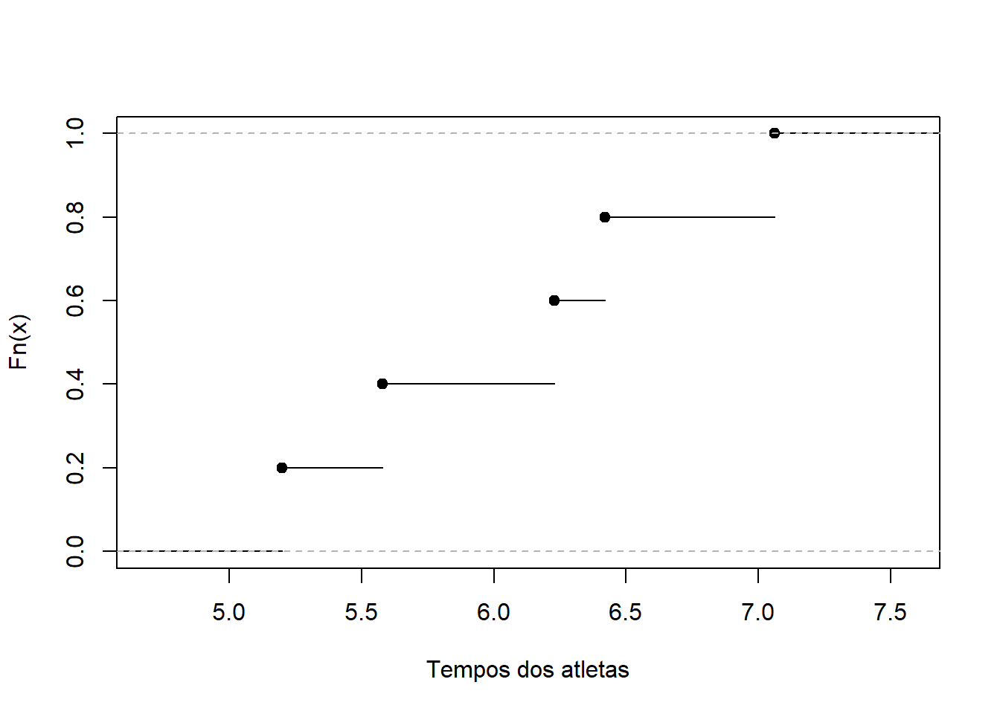

atletas <- c(5.20, 5.58, 6.23, 6.42, 7.06)
fde <- ecdf(atletas)
fde(5.3)[1] 0.2Seja \(X_1,\ldots,X_n\) uma amostra aleatória proveniente de um modelo \(F\) qualquer. Considere a função de distribuição empírica (FDE), dada por \[\hat{F}_{n}(x)=n^{-1} \sum_{i=1}^{n}I_{(-\infty,x]}(X_i)\] onde \(I_{A}(y)\) é a função indicadora do evento \(y\in A\), valendo 1 se \(y\in A\) e 0 em caso contrário. Em palavras, esse estimador representa a proporção de variáveis aleatórias que são menores ou iguais a \(x\).
Vamos mostrar que a FDE é um estimador para \(F\). Primeiro, notemos que \(I_A(X)\sim\hbox{Bernoulli}(P(X\in A))\). Assim,
\[\begin{align*}E[ \hat{F}_n(x)]&=n^{-1}E\left[\sum_{i=1}^n I_{(-\infty,x]}(X_i)\right]=n^{-1}\sum_{i=1}^n E[I_{(-\infty,x]}(X_i)]\\ &=n^{-1}\sum_{i=1}^n E[I_{(-\infty,x])}(X_1)] = n^{-1}nE[I_{(-\infty,x]}(X_1)]\\ &=P(X_1\leq x)=F(x)\end{align*}\]
logo a FDE é um estimador não viciado para \(F(x)\). Além disso,
\[\begin{align*}Var[ \hat{F}_n(x)]&=n^{-2}Var\left[\sum_{i=1}^n I_{(-\infty,x]}(X_i)\right]=n^{-2}\sum_{i=1}^n Var[I_{(-\infty,x]}(X_i)]\\ &=n^{-2}\sum_{i=1}^n Var[I_{(-\infty,x])}(X_1)] = n^{-1}Var[I_{(-\infty,x]}(X_1)]\\ &=\frac{1}{n}F(x)[1-F(x)]\end{align*}\] o que implica que a FDE é um estimador consistente. Também é possível mostrar que a FDE é uma estatística completa, o que implica que ela é o melhor estimador não viciado para \(F(x)\), conforme o teorema abaixo.
Theorem 2.1 Seja \(X_1,\ldots,X_n\) uma amostra aleatória onde \(X\) tem função de distribuição \(F(x)\). Então, para cada \(x\) fixado, \(\hat{F}_n(x)\) é uma estatística completa para \(F(x)\).
Considere \(U_x = n\hat{F}_n(x)=\sum_{i=1}^n I_{(-\infty,x]}(X_i)\). Note que \(U_x\sim\hbox{Binomial}(n, F(x))\). Para uma função \(g(U)\) qualquer
\[\begin{align}E[g(U)]&=\sum_{u=0}^n g(u){n\choose u}F(x)^u[1-F(x)]^{n-u}\\&=[1-F(x)]^n\sum_{u=0}^n\underbrace{{n\choose u}g(u)}_{a_u}\left[\underbrace{\frac{F(x)}{1-F(x)}}_{b}\right]^u\\&=[1-F(x)]^n\sum_{u=0}^na_u b^u\end{align}\] Como a expressão acima é um polinômio, temos que \(E[g(U)]=0\) se e somente se \(a_u=0\) para \(u=0,\ldots,n\), o que só pode ocorrer se \(g(u)=0\) para \(u=0,\ldots,n\). Portanto, \(U_x\) é uma estatística completa e, como \(\hat{F}_n(x)\) é uma transformação afim de \(U_x\), teremos que a FDE também é completa.
Vale ressaltar que a mesma notação é utilizada para a FDE observada, isto é,
\[\hat{F}_n(x)=\frac{1}{n}\sum_{i=1}^n I_{(-\infty,x]}(x_i).\]
Example 2.1 Em um estudo sobre preparo físico, 5 atletas foram selecionados para percorrer o mesmo circuito. Os tempos de cada um, em minutos foram:
\[\begin{array}{ccccc} 5,20 & 5,58 & 6,23 & 6,42 & 7,06 \end{array}\]
A FDE destes dados é
\[\hat{F}_n(x)=\left\{ \begin{array}{cc} 0 & x<5,2 \\ \frac{1}{5} & 5,2\leq x < 5,58 \\ \frac{2}{5} & 5,58 \leq x< 6,23 \\ \frac{3}{5} & 6,23 \leq x <6,42 \\ \frac{4}{5} & 6,42 \leq x< 7,06 \\ 1 & x\geq 7,06 \end{array}\right.\] }
Essa função pode ser obtida no R do seguinte modo
atletas <- c(5.20, 5.58, 6.23, 6.42, 7.06)
fde <- ecdf(atletas)
fde(5.3)[1] 0.2Abaixo, mostramos o gráfico da FDE:
plot(fde, xlab= 'Tempos dos atletas', main='')
Independente da natureza de \(X\), a FDE sempre representará uma função de distribuição discreta, com função de probabilidade (estimada) dada por
\[p_n(x)=n^{-1}\sum_{i=1}^{n}I_{\{x\}}(x_i),\] ou seja, \(p_n(x)\) é a proporção de observações na amostra iguais a \(x\), também conhecida como frequência relativa.
Um funcional estatístico é qualquer quantidade definida através de \(F\). Por exemplo, a média populacional para variáveis aleatórias contínuas é dada por
\[\mu(F)=\int xdF(x)=\int xf(x)dx.\]
Como \(F(x)\) pode ser estimada por \(\hat{F}_n(x)\), podemos obter estimadores para \(\theta(F)\) através do princípio da substituição.
Definition 2.1 O princípio da substituição
Seja \(T\) um estimador para \(\theta\) e suponha que desejamos estimar a função \(\tau(\theta)\). Então, um estimador para \(\tau(\theta)\) será \(\tau(T)\).
Example 2.2 A média amostral
Considere que existe \(E(X)\) para o modelo \(F(.)\). Como \(\hat{F}_n(.)\) estima \(F(.)\), a média calculada via FDE é um estimador para \(\mu=E(X)\).
Seja \(S\) a amostra observada, removendo as repetições. Recorde que \(\hat{F}_n(x)\) é a função de distribuição associada à variável aleatória discreta com função de probabilidade equivalente as frequências relativas do conjunto \(s\). Então, a estimativa para \(\mu\) é dada por
\[\begin{align}\hat{\mu}&=\sum_{x\in s} xp_n(x)=\sum_{x\in s}x\sum_{i=1}^n\frac{1}{n}I_{\{x\}}(x_i)\\&=\frac{1}{n}\sum_{i=1}^n\left[\sum_{x\in s}xI_{\{x\}}(x_i)\right]=\frac{1}{n}\sum_{i=1}^n x_i=\bar{x}_n.\end{align} \]
Embora o exemplo anterior tenha envolva apenas \(\mu=E(X)\), a mesma abordagem pode ser utilizada para obter um estimador para \(E[g(X)]\).
Proposition 2.1 O estimador de \(\theta(F)=E[g(X)]\) é dado por
\[\theta(\hat{F}_n)=\frac{1}{n}\sum_{i=1}^n g(X_i)\]
Example 2.3 Como a variância de \(X\) é dada por
\[Var[X]=E[(X-E[X])^2]=E[X^2]-E[X]^2,\] e como podemos \(E[X^2]\) por \[\frac{1}{n}\sum_{i=1}^n x_i^2,\] teremos que o estimativa da variância baseada na FDE é dada por \[\hat{\sigma}_n^2=\frac{1}{n}\sum_{i=1}^n x_i^2-\bar{x}_n^2=\frac{1}{n}\sum_{i=1}^n (x_i-\bar{x}_n)^2.\] Por ser um estimador não viciado, utiliza-se a estimativa \[s_n^2=\frac{1}{n-1}\sum_{i=1}^n (x_i-\bar{x}_n)^2.\]
Example 2.4 O de quantil ordem \(p\) (ou 100%-ésimo percentil), denotado por \(Q(p)\), é definido por
\[Q(p)=F^{-1}(p)\] onde \(F^{-1}(p)\) é definida como o menor valor de \(x\) tal que \(F(x)\) é pelo menos igual a \(p\), isto é, \[F^{-1}(p)=\inf\{x:F(x)\geq p\}\]
Logo, pelo princípio da substituição, o qunatil \(p\) é definido por
\[\begin{equation} Q_n(p)=\inf \{x:\hat{F}_n(x)\geq p\}. \end{equation}\]
Se \(X\) é contínua, então a função quantílica também é. Contudo, \(Q_n(p)\) sempre será discreta. Para entregar um comportamento contínuo, existem diversos estimadores para a função quantil empírica interpolando as estatísticas de ordem
\[Q^*(p)=(1-\gamma)x_{(i)}+\gamma x_{(i-1)},\] onde \((i-1)/n<p< i/n\) e \(i>1\). A função quantile do R apresenta 9 implementações distintas baseadas na interpolação.